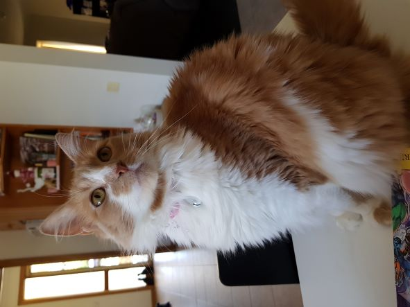

About Me


Personal Information
Name: Jack Dylan Coutts
Student ID: s3954906
Email: s3954906@student.rmit.edu.au
Nationality: Australian
Language: English
Education: VCE (2010), Cert. IV in Hairdressing (2014)
Employment: Retail Management (2015-2022)
Pets: A cat named Kit (whose namesake is the cat from Charmed)
Favourite Pastimes Include: Reading, Gaming, Music,
Various crafts, such as cross stitch, painting, sewing, knitting
Favourite Author: Brandon Sanderson
Favourite Book Series: The Stormlight Archives
Interest In IT
What is your interest in IT? When did your interest in IT start?
From a young age, I was often curious how things worked. I would often take things apart and put them back together, and as I’ve grown this has translated for a desire to know the how and why of technology.
I have always had a knack for picking up skills and I very briefly studied computer repair around 10 years ago with the plan to then study programming and IT. Unfortunately, life got in the way so I’m finally coming back to pursue my passion for technology.
Why did you choose to come to RMIT?
I chose RMIT because of reputation as I know a lot of people who have studied through RMIT, such as my sister, and work with a few people who are currently studying there,
and they all have nothing but praise for the university. Also, the listed course outcomes align perfectly with what I want to achieve, and as such believe it will be a great institution to help me start my IT career.
What do you expect to learn during your studies?
I expect to gain foundational knowledge from which I can begin to build a career on and walk away from study confident that I will be able to get a job and succeed in the Technology Field.
I know there will be challenges along the way and I am excited to face these head on as every problem is a chance to grow and learn!